Page 1 / 513
第 26 章 动物行为学
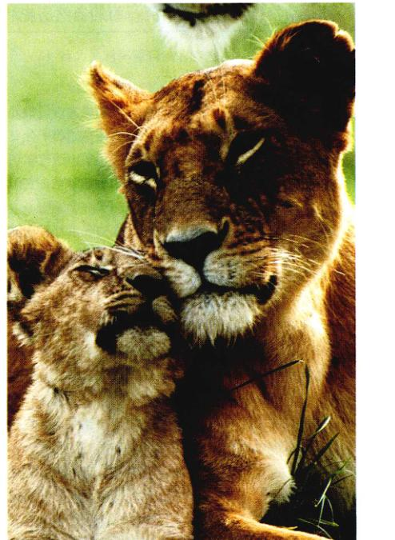
图 26.1 抚育后代是一种复杂的动物行为 生活在狮群中的雌狮能更好地履行母亲的责任。雌狮们共同哺育和保护狮群中的幼狮，从而增加了它们活到成年的几率。
生物体通过种种方式与环境发生相互作用。为了深入理解这些作用，我们必须考虑以下两方面的因素：①决定生物行为的生物体本身的内在因素；②影响这些行为的外在环境因素。在本章中，我们将探讨决定动物行为的机制（图 26.1）以及个体行为的发展方式。在第27章中，我们将进入到生态学的领域，研究自然选择在进化过程中对行为的塑造作用。
Page 2 / 514
26.1 动物行为学者重研究行为的自然历史
26.1.1 行为研究的方法
在过去的20年间，动物行为研究已经成为一门十分重要而丰富的学科，它将生物学研究领域中的若干分支联系在一起。进化生物学、生态学、生理学、遗传学和心理学均与行为研究有着天然的和逻辑上的联系，它们为行为研究提供了不同的视角，并提出了新的问题。
动物行为研究对于我们理解许多生物现象都具有重要的意义，例如神经系统的工作机制、儿童的早期发育、人际交流，以及物种的形成过程、种群的组织形式甚至自然选择本身的机制等。虽然人们对一些观点颇有争议，但通过研究其他动物而提出的行为学的普遍规律，已经逐渐应用于人类自身。行为学的研究正日益改变着我们对人类行为起源的认识，并使我们开始重新审视人类这一物种。
生物的行为可以定义为生物体对外界环境刺激的反应的方法。刺激可以像食物的气味那样简单。从这个意义上来说，一个细菌趋向高浓度营养物质的运动也是一种“行为”。这一行为非常简单，但是它对于细菌有着重要的意义，使它们能够得以存活和繁殖。随着进化的不断深入，动物的后洁和生殖面临复杂的环境条件；与此同时，它们的神经系统和行为也变得越来越复杂。神经系统接收和处理来源于外部环境的刺激信号，启动相应的应答机制，形成多种多样的行为方式。
研究动物行为时，可以从两个方面对其进行解释。首先，我们会关心这些行为具有怎样的内部基础，即动物的感觉系统和神经网络等这些内部性状是如何为行为提供生理基础的。从这个角度上说，我们研究的是行为产生的近端原因 (proximate causation)。为了分析行为的近端原因，我们必须测量动物体内的激素水平或记录神经细胞的冲动信号。与此同时，我们也会关心为什么进化过程会选择某种行为，即行为具有哪些适应性，这就是在探索行为产生的远端原因 (ultimate causation)。为了研究行为的远端原因，我们需要探讨某种行为对动物生存和繁殖的影响。一只雄鸟在繁殖季节的鸣叫行为源自于体内一定水平的类固醇激素，它们结合脑中的相应受体从而引起鸣叫，这便是雄鸟鸣叫的近端原因。另一方面，雄鸟的鸣叫具有保护自己的领地并吸引雌鸟与之交配的功能，这就是雄鸟鸣叫的远端原因或者说进化上的解释。
长期以来，行为研究都存在着各种争议，争论焦点之一是：动物行为究竟是由个体基因决定的，还是由后天的学习和经验决定的？换言之，行为现象究竟是本能的还是学习的结果？从前，人们一直试图为这个问题寻找一个非此即彼的答案。但是现在我们知道，先天的本能和后天的经验都起着重要的作用，两者交织在一起最终塑造了行为方式。对先天本能和后天学习及其相互作用的研究，促进了包括动物行为学、行为遗传学、神经心理学的多学科发展。
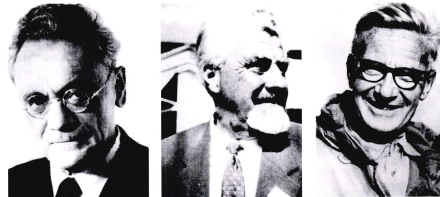
图 26.2 动物行为学之父 Karl von Frisch, Konrad Lorenz 和 Niko Tinbergen 是行为科学领域中的先驱者。1973年，由于他们所做的开创性的工作而被授予诺贝尔生理学或医学奖。von Frisch 领导了对蜜蜂交流方式和感知生物学的研究。Lorenz 主要研究敌对行为的起源和社会发展（印记作用）。Tinbergen 是首位行为生态学家，他第一次探索了行为的功能意义。
Page 3 / 515
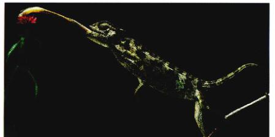
图 26.3 蜥蜴捕食猎物 这只变色龙用来捕捉昆虫的一系列复杂的舌部运动体现了一种固定行为模式。
1) 动物行为学
动物行为学 (ethology) 是研究动物行为历史的学科。早期的动物行为学家（图 26.2）从动物行为学、生物学的角度研究动物行为，强调自然条件下动物的行为研究。由此他们断定，行为在很大程度上是由本能决定的或者是说先天的，它们是自然选择的产物。由于某一物种的行为通常是固定的 (stereotyped)（即在同一种群的不同个体中有着相同的表现），早期的动物行为学家认为行为一定源于神经系统中的先天程序。按照他们的观点，这些程序的组成是由基因决定的，它们使动物在出生时即具备相对完整的行为。
早期动物行为学家们的观点来源于对某些动物行为的观察，例如雄鸡取回卵的行为。雄鸡在巢中孵卵，如果发现有一个卵出了巢，就会将颈部伸向那个卵，站起身并把卵喙在喙下，通过摆动脖颈把卵滚回巢中。在此过程中即使卵被移走，雄鸡仍然会完成全部动作。似乎在最初发现卵在巢外时，它们启动了某种“程序”，驱动全部行为的完成。按照动物行为学家的观点，取回卵的行为是由一个信号刺激 (sign stimulus)（亦称关键刺激 (key stimulus)——卵在巢外——引发的；接着，雄鸡神经系统中的一个要素，一种先天释放机制 (innate releasing mechanism)，驱动了遵从某种程序的行为，或者说固定行为模式 (fixed action pattern)（图 26.3）。进一步来说，信号刺激存在于环境中，是一个触发某种行为的“信号”；先天释放机制是察觉这种信号的感觉机制，固定行为模式则是一种模式化的行为。与此雌鸡的行为相似，青蛙见到运动的物体便会伸出粘而具黏性的舌头；雄性棘鱼见到具有红色腹部的同类雄鱼便会攻击。作为动物行为学的重要观点，这些反应似乎理所当然地都是程序化的和本能的，但是有什么证据可以证明行为确实具确神经生理的基础呢？
2) 行为是对环境刺激的应答
在雄鸡取回卵的例子中，雄鸡必须首先察觉到巢外的卵。为了对这个刺激进行应答，它必须把输入视觉系统的一种能量形式——光能——转换为神经系统且自我理解，并且能应答另一种能量形式——神经冲动的电能。动物需要对环境中的许多刺激做出应答，对于采集完食物准备返回巢穴的动物来说，它可能会依赖太阳的位置辨识方向；为了寻找配偶，动物可能会释放出某种特殊的化学物质。光线的电磁能和气味的化学能也必须被转换为神经冲动的电能，在这些过程中，环境中的能量通过能量转换 (transduction) 变成某种动作电势，这一过程也是感觉器官察觉刺激的第一步。例如视紫红质 (rhodopsin) 负责视觉刺激的能量转换，它由视黄醛和视蛋白组成。光子被视觉色素——视黄醛吸收，使后者的构象由顺式变为反式（见第55章）；接着视蛋白的构象也发生改变，诱导一系列最终形成神经冲动的分子事件。听觉、嗅觉和味觉也是由于相应的刺激信号，通过与视觉类似的方式转换为神经冲动而最终产生的。
26.1.2 行为遗传学
20世纪40年代，Robert Tryon 进行了著名的老鼠走迷宫实验。他将老鼠放在一个由若干死路和一个出口组成的迷宫中，并在出口处放置食物作为奖励，研究老鼠们走迷宫的能力。在实验中，有些老鼠很快学会了走迷宫，它们能够以较少的转弯错误和较短的时间到达出口；而有些老鼠则要花长得多的时间才能学会找出正确的路径（图 26.4）。Tryon 将“聪明”的老鼠集中饲养，建立下一个“走迷宫高手”的群体；同时喂养“迟钝”的老鼠以建立一个“走迷宫笨蛋”的群体。然后他测试每个群体的后代，研究它们学习走迷宫的速度，结果发现，“聪明”老鼠的后代甚至比它们的亲代更容易学会走迷宫，而“迟钝”老鼠的后代比它们的亲代学得更慢。将这个过程重复几代后，Tryon 得到了两群具有显著行为差异的老鼠，它们学习走迷宫能力截然不同。显然，学习走迷宫的能力在某种程度上具有遗传性，受到能够传递到子代的基因的控制。而且，这些基因具有行为特异性，这两组老鼠在完成其他任务时没有表现出显著的行为差异，例如它们在一个完全不同的迷宫中寻找出路的能力并没有差别。Tryon 的研究证明了可以通过实验揭示行为中的遗传成分。
Page 4 / 516
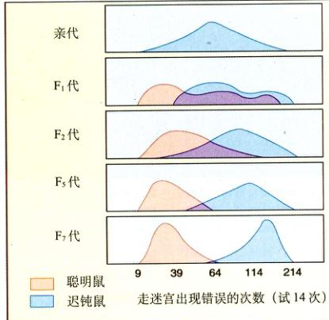
图 26.4 学习能力的遗传因素 Tryon 通过人工选择的方法证明了老鼠学习走迷宫的能力受基因因素影响。他对一大群老鼠进行了实验，选择那些用最短时间找到出口的个体并让它们彼此交配。然后，他继续训练这些老鼠后代并用它们中走迷宫最快的那些个体繁殖下一代。七代之后，他成功地将老鼠走迷宫的平均时间缩短为第一代的一半。与此平行进行的对走迷宫较慢老鼠的人工选择的结果与此相反，平均走迷宫时间延长为第一代的两倍。
对杂交后代的研究进一步支持了行为具有遗传基础的观点。康奈尔大学的 William Dilger 研究了两种多情鹦鹉属 (Agapornis) 的鹦鹉，它们搬运筑巢材料（如树枝、纸条等）的方式有所不同。其中 A. personata 用喙衔着筑巢材料，而 A. roseicollis 把材料藏在侧腹的羽毛之下（图 26.5）。Dilger 使这两种物种交配并产生杂交后代，他发现，杂交后代搬运筑巢材料的方式似乎介于两种亲鸟之间：它们不断地将材料在喙与侧腹的羽毛间移动。另外，对蟋蟀和树蛙求偶期间鸣叫声的研究同样显示杂交后代具有中间状态行为。
比较同卵双胞胎的行为可以看到人类行为中的遗传学作用。顾名思义，同卵双胞胎具有相同的基因。然而，大多数同卵双胞胎都在相同的环境中长大，因此不能确定他们相似的行为是源自于相似的基因还是源自于他们成长过程中相似的经历（行为是由于先天决定，还是后天形成的仍存在争议）。只有在某些特殊情况下，将同卵双胞胎从出生起便相互分开进行研究才有意义。最近，一项对50对这样的双胞胎进行的研究表明，他们在个性、气质，甚至是娱乐活动等方面都有惊人的相似性，尽管这些双胞胎常常是在差异很大的环境中被抚养成人。这些相似之处表明，遗传在决定人类行为上虽然起着明显的作用，尽管遗传与环境的相对重要性仍处于激烈的讨论中。
单个基因对行为的影响
上述老鼠学走迷宫、鹦鹉杂交后代搬运筑巢材料以及人类同卵双胞胎行为特征研究均表明了基因对行为有着重要的影响，最近的研究为这一关系提供了更多的细节。在果蝇和老鼠中，已经发现很多基因突变与特定的异常行为存在着联系。
例如在果蝇中发现了与幼虫进食行为有关的基因，这个座上存在有两个等位基因，拥有其中一个的个体幼虫在进食时有明显的运动，而拥有另一个等位基因的个体幼虫在进食时几乎不予动。除此之外，目前已经发现了大量影响果蝇求偶行为的各个方面的基因变异。
若干老鼠的基因变异也会影响行为的方式。例如，某种变异的老鼠发生记忆障碍，忘记了两天前它们学习到的有关物体存放位置的信息。这种现象是由于突变的老鼠体内不能产生钙依赖性 α 钙调素依赖激酶 II (α-calcium-calmodulin-dependent kinase II) 而导致的，这种酶对于海马——大脑中负责空间学习的一部分——的功能起着重要作用。
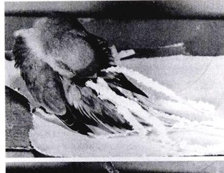
图 26.5 鹦鹉行为的遗传性 鹦鹉继承了亲代搬运筑巢材料（例如纸条）的方式，把它们携带在腹部的羽毛中。
Page 5 / 517
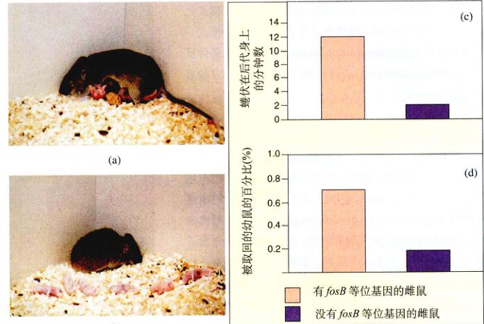
图 26.6 基因切除导致的育幼行为的缺失 (a) 正常的雌鼠会精心照料后代，街回远离巢穴的幼鼠并且用身体护住它们。(b) fosB 基因变异的雌鼠没有这些行为，任由幼鼠暴露在外。(c) 雌鼠以哺乳姿势护住幼鼠的时间对比。(d) 人为移开幼鼠，雌鼠街回后代情况的对比。
资料来源：J.R. Brown et al, 1996。
利用现代分子生物学技术，人们可以更加精确地研究行为中的遗传作用。例如，切除特定基因的雄性小鼠将丧失合成一氧化氮——大脑中的一种神经递质——的能力，表现出更为强烈的敌对行为。
1996年一个发现令世人瞩目，科学家们利用基因切除技术发现了一个新基因——fosB，它似乎决定着雌性小鼠是否会哺育它们的幼鼠。fosB 的两个等位基因均被切除的雌鼠起初会对新生幼鼠十分好奇，但是接着就对它们置之不理了；这与正常雌鼠表现出来的照顾并保护幼子的母性行为截然相反（图 26.6）。
这种不抚育后代的现象是一个链式反应的结果。当雌鼠初次观察新生幼鼠时，来自它们听觉、嗅觉和触觉的信息被传递到下丘脑。在这里，fosB 基因被激活，产生一种特殊的蛋白质，后者依次激活其他影响下丘脑内神经通路的酶和基因。这种脑内的变化使雌鼠对幼鼠表现出母性。相反，对于缺少 fosB 基因的雌鼠，这个过程会在中途停止。缺少了蛋白质的激活，脑中的神经通路无法发生相应的变化，导致了雌性行为的消失。
随着基因技术越来越广泛的应用，今后的几年内，我们对我们自身基因和行为的关系会有更加深入的理解，定将出现更多让我们惊奇的结论。
26.2 比较心理学重点研究学习对行为的影响
26.2.1 学习
当动物行为学家试图把行为解释为本能的过程时，比较心理学家 (comparative psychologist) 则把研究重点放在学习 (learning) 方面，认为后天的学习是行为塑造中的主要因素。这些行为学家观察老鼠在各种实验室条件下的行为方式，以研究动物的学习过程。学习，是指任何源于经验的行为调整，而不是动物在成熟过程中表现出的源于遗传的行为变化。
非联想性学习 (nonassociative learning) 是最简单的学习模式，它不需要动物在某个刺激或某种应答之间形成联想。适应 (habituation) 是非联想性学习的典型模式，是指反复施加中性刺激（即不产生有利的也不产生有害的结果，或者说没有强化作用的刺激）而导致的应答强度的降低。很多情况下，第一次刺激会引起动物的强烈反应，但是这种反应会随着刺激的不断重复而逐渐减弱。例如，雏鸟会注意到许多物体在头顶移动，起初，它们会表现出蜷伏下来并保持安静的反应。随着它们对看到的物体越来越熟悉，某些物体例如落叶或者同种鸟类（它们对雏鸟没有任何有利或有害的作用），幼鸟就会逐渐适应这些刺激并停止做出反应。因此，适应可以看做一种忽略某些刺激的学习过程。对于一生中充满着纷纭复杂刺激的动物来说，这种对无关刺激的忽略是至关重要的。非联想性学习的另一种模式是致敏 (sensitization)，与适应相反，在致敏过程中动物对某种刺激的反应逐渐加强。
联想性学习 (associative learning) 与前述两类刺激（适应和致敏）之间或者特定刺激 - 应答间的联想有关（图 26.7）。在这种情况下，行为通过联想发生改变，或者说行为是条件性的 (conditioned)。这种学习模式比适应和致敏更为复杂。联想性学习主要包括两种模式——经典条件反射 (classical conditioning) 和 操作性条件反射 (operant conditioning)，它们的区别在于联想建立的方式。
Page 6 / 518
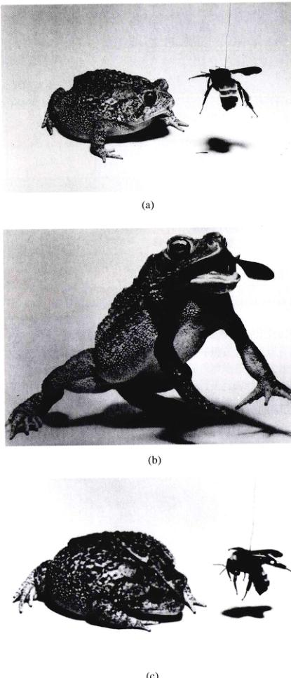
图 26.7 学习什么是可食的 联想性学习体现在捕食者-被捕食者关系中。(a) 用一只大黄蜂喂食一只初次试验的蟾蜍。(b) 这只蟾蜍被蜇。然后 (c) 不再吃大黄蜂或者任何其他具有黄黑相间斑纹的昆虫。这只蟾蜍在昆虫的外表颜色与疼痛之间建立了联系，并调整了自身行为。
1) 经典条件反射
在经典条件反射中，两种不同的刺激成对出现，使动物在它们之间产生联想。俄国心理学家伊凡·巴甫洛夫首次研究了这一现象，因此经典条件反射也称巴甫洛夫条件反射 (Pavlovian conditioning)。巴甫洛夫将肉末（一个非条件刺激）放在狗的面前，注意到这只狗做出了流口水的反应——非条件反射。如果一个无关刺激，例如铃声与肉末同时出现，在反复的刺激后，狗将会对单独的铃声刺激做出流口水的反应。狗已经学会了将无关的铃声刺激与肉末刺激联系起来，因此它对声音刺激的反应是条件性的，铃声则是条件性刺激。
2) 操作性条件反射
在操作性条件反射中，动物学习将其自身的行为与某种奖励或者惩罚联系起来。美国心理学家 B. F. Skinner 在被称为“Skinner 盒子”的装置中研究老鼠的操作性条件反射。当老鼠在盒子里活动时，它会偶然触动一个杠杆，得到一小块食物。起初，老鼠会忽略杠杆而吃掉食物，然后继续在盒子中活动。然而很快的，它会把触动杠杆（行为/反应）和获得食物（奖励）联系起来。当老鼠感到饥饿时，就会主动频繁地触动那根杠杆。这种“尝试-错误”的学习对于大多数脊椎动物都有着重要的意义。
比较心理学家们曾经认为，动物可以将任何两个刺激通过经典条件反射联系起来，并且可以通过操作性条件反射对任何条件性的刺激做出行为应答。但是正如接下来我们会看到的，这个观点已经发生了改变。今天，本能 (instinct) 被认为是支配学习的主要因素，它决定着何种信息能够被动物通过条件反射而学会。
3) 本能
现在我们都知道，许多动物先天性地倾向于形成某种特定的联系。例如，若老鼠在得到食物的同时接受 X 线照射（稍后会感到恶心），这只老鼠将会记住这块食物的味道而不是它的大小。相反地，如果老鼠在得到食物的同时遭受电击（马上会导致疼痛），这只老鼠则会记住食物的大小而不是它的味道。类似地，鸽子能够学会将食物与颜色联系起来，而不联系食物和声音；同样，它们会将危险与声音联系在一起，而不是颜色。
以上例子说明了学习准备状态 (learning preparedness) 的存在，即一种动物学习的对象将受到生物体自身的各种限制，研究发现只有在本能范围内的学习才是可能的。这种先天性的程式之所以形成，是因为进化过程对于适应性的应答具有选择作用。在夜间觅食的老鼠有着高度发达的嗅觉，因此能够更好地通过味道而不是大小或者颜色来辨别危险的食物。种子有着可以被鸽子察觉到的明显的颜色，但是它不会发出鸽子能够听见的声音。对学习的研究已经延伸到了学习的生态意义方面，因此我们将考虑“学习的进化过程”。一种动物的生态背景对于我们了解动物能学会什么有着关键的意义。一些鸟类以种子为食，例如克拉克星鸦 (Clark's nutcracker)，在食物丰富时它们将种子埋藏起来以备过冬，它们会在上千个地点埋藏种子，冬天到来时星鸦能够将种子一一找出。可以猜想这些鸟有着很好的空间记忆力，这一点也确实被实验所证实（图 26.8）。克拉克星鸦以及其他储藏种子的鸟类通常有着巨大的海马——大脑中的记忆中枢（见第54章）。
Page 7 / 519
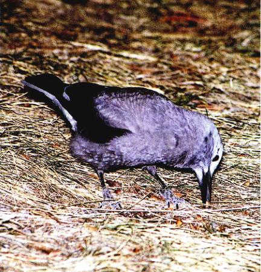
图 26.8 克拉克星鸦有着非凡的记忆力 克拉克星鸦能够记住多达 2000 处的几个月之前埋藏种子的地点。一系列实验之后，科学家们推断这种鸟是利用地形特征和其他周围的物体作为空向坐标来记忆埋藏种子的地点的。
26.2.2 行为的发育
行为生物学家们逐渐认识到动物行为中具有先天遗传和后天经验的双重成分，传统的动物行为学和心理学研究也不像从前那样两极分化了。在本章的前一部分，我们分别讨论了遗传和学习对行为的影响。接下来我们将介绍，这些因素在行为的发育过程中是如何相互作用并最终完成对行为塑造的。
1) 亲子关系
动物个体在成熟过程中，会与其他个体发生社会接触并产生对今后有影响的特殊行为偏好，这个过程是一种称为印记作用 (imprinting) 的学习模式。父母与后代之间形成的社会接触称为亲子印记作用 (filial imprinting)。例如，某些鸟类的幼鸟在出生后的几小时内会仿效母鸟，这种反射最终促成了母鸟与幼鸟之间某种特殊联系的形成。然而，幼鸟的最初经验决定了这种印记是如何建立的。德国动物行为学家 Konrad Lorenz 证明了鸟类会模仿它们出生后第一眼看到的物体，并以该物体为模板指导自己的社会行为。Lorenz 从鹅蛋中孵化出小鹅，将自己做为印记作用的模板，这时小鹅会把它当作自己的母亲并忠实地模仿他（图 26.9）。嗡嗡盒、闪光灯和喷壶都可以成为鹅的印记对象（图 26.10）。印记作用发生在敏感阶段 (sensitive phase) 或者临界时期 (critical period) 中（对鹅而言为出生后的 13~16 小时内），这时印记作用的成功率最高。
有研究表明，临界时期亲代与子代的社会联系在行为的正常发育中起着关键作用。心理学家 Harry Harlow 为恒河猴孤儿提供了两个代理“母亲”，一个是用于铁丝做成的母猴的框架，另一个则在框架上蒙一层软布。Harry 观察幼猴与不同“母亲”建立社会联系时，发现幼猴更多时候选择与软布母猴待在一起，尽管只有框架母亲提供食物，这表明母亲是通过质感和触觉接触而非提供食物促使子之产生社会接触的。如果剥夺幼猴正常的社会接触，它们的发育便会变得反常。而且，剥夺社会接触的程度越大，个体在童年和成年的社会行为就越反常。对人类孤儿的研究表明，一个在感情上坚定不移的“母亲形象”对于孩子正常的成长和心理发育都是必须的。
最近的研究揭示了早期亲子关系中，激素在发育中的必要性。母鼠舔抵刚出生的幼鼠，这种刺激抑制了阻止正常发育的内啡肽（见第56章）的释放。接受正常触觉刺激的幼鼠大脑中会拥有更多的肾上腺皮质激素受体，寿命更长的脑神经元，以及更强的缓解精神压力的能力。
Page 8 / 520
经常按摩早产儿能够使他们的体重迅速增加。这些研究都表明，对于正常社会接触的需要来源于大脑的功能，亲子间的接触和其他相互关系，在生理的和行为的发育过程中都起着至关重要的作用。
在性别印记 (sexual imprinting) 过程中，个体将会学会与同种的其他成员发生有关性行为。交叉抚养 (cross-fostering) 实验——某物种的个体由另一物种的亲代抚养——的研究表明，这种印记同样发生在生命的早期。上述的研究显示，对于大多数鸟类而言，被抚养的鸟在性成熟后倾向于和抚养它的鸟的同类进行交配。

图 26.9 “靠不住”的母亲 急切的小鹅把 Konrad Lorenz 当做妈妈一样紧追不舍。他是它们孵化后看见的第一个物体，因此被它们当做了印记的对象。
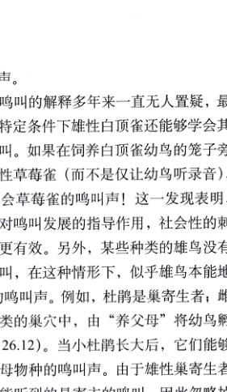
图 26.10 印记作用研究 小鸭们会对它们看见的第一个物体产生印记作用，即使是 (a) 一个黑盒子或者 (b) 一个白色的球体。
2) 本能与学习之间的相互关系
Peter Marler 和他的同事们研究的白顶雀求偶期间“对情歌”现象，是一个揭示行为发育过程本能与学习之间相互作用的著名例子。求偶期间的雄鸟会发出特殊的鸣叫声，这种鸣叫叫具有物种特异性。通过在装有话筒和麦克风的隔音培养箱中喂养雄鸟，Marler 能够控制雄鸟成熟过程中听到的声音并记录下来。他们发现，在发育期间没有听到任何声音或者仅仅听到其他物种——比如北美歌雀——鸣叫声的白顶雀，在性成熟后只能发出不完全的鸣叫（图 26.11）。但是，当它们听到了其他白顶雀的叫声，或者同时听到自己物种与其他物种——北美歌雀的叫声时，白顶雀则会在性成熟后发出正确而完全的鸣叫。结果表明鸟类具有一种遗传模板 (genetic template)，这种源自本能的“程序”，指导它们学会正确地鸣叫。在发育临界期内，鸟类将接收到的正确（同种的）鸣叫声，并以此作为范例指导正确的鸣叫学习。因此，鸣声的获得取决于学习，但是只有正确的叫声（同种的叫声）能被学会。遗传模板对正确的叫声具有选择性；然而，在获得正确叫声的过程中，学习仍然起着重要的作用。如果一只只在发育临界期内听过同种鸟正确鸣叫声的幼年白顶雀工致聋，它在成年之后依然只能发出不完全的鸣叫。因此，鸟类必须通过反夏聆听自己的鸣叫，并将其与遗传模板所接收的范例进行比较，才能最终获得完全正确的叫声。
尽管上述对于鸣叫的解释多年来一直无人置疑，最新的研究却发现特定条件下雄性白顶雀还能学会其他物种的特异性鸣叫。如果在饲养白顶雀幼鸟的笼子旁边放置一只活的雄性草莓雀（而不是仅让幼鸟听录音），白顶雀幼鸟就会学会草莓雀的鸣叫声！这一发现表明，要覆盖先天程序对鸣叫发展的指导作用，社会性的刺激比单纯的录音更有效。另外，某些种类的雄鸟没有机会听到同种的鸣叫，在这种情形下，似乎雄鸟本能地“知道”自己物种的鸣叫声。例如，杜鹃是巢寄生者，雌鸟把卵生在其他鸟类的巢穴中，由“养父母”将幼鸟孵化并抚养长大（图 26.12）。当小杜鹃长大后，它们能够发出杜鹃而非养父母物种的鸣叫声。由于雄性集寄生者在成长过程中最可能听到的是寄主的鸣叫，因此忽略掉这些“不正确”的刺激便具有了适应性的意义。杜鹃听不到自己物种成年雄性的鸣叫，因而没有正确的范例以供遵循。对于这些物种而言，自然选择使雄鸟具备了由遗传决定的鸣叫能力。
Page 9 / 521
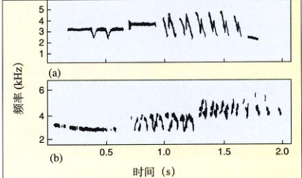
图 26.11 鸟类鸣叫的发育 在发育过程中听到自己物种鸣叫声的雄性白顶雀，它们的声波图 (a) 不同于没有听到过自己物种鸣叫声的白顶雀声波图 (b)。这个区别表明了单纯的遗传因素是不足以产生正常鸣叫声的。
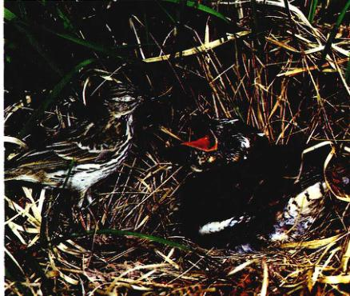
图 26.12 巢寄生者 杜鹃将蛋产在其他鸟类的巢穴中。因为小杜鹃（图右侧大一些的鸟）由不同物种的鸟类（比如草地鹨，左侧小一些的鸟）养大，它们没有机会学习自己物种的鸣叫。它们后来发出的杜鹃鸣叫声是天生的。
26.2.3 行为的生理基础
早期动物行为学家过多强调本能的作用，就会忽视控制行为的内部因素。如果有人问为什么雄鸟会保卫自己的领土并且仅仅在繁殖季节鸣叫，他们会回答说“当处于某种动机状态，并且具有适当的驱动力的时候，雄鸟才鸣叫”。但是这些专业词汇从生理机制的角度上讲意味着什么呢？
通过对动物生殖行为的研究，我们获得了有关行为生理基础的许多认识。例如，动物仅仅在繁殖季节表现出特有的生殖行为（如求偶等），对蜥蜴、鸟类、老鼠以及其他动物的研究表明，这些行为主要是受到激素的影响。日照长度变化会刺激下丘脑分泌促性腺激素释放激素，并进一步刺激垂体前叶释放促性腺激素、促卵泡激素 (FSH) 和黄体生成素，这些激素促使动物的生殖器官作好繁殖准备。促性腺激素刺激类固醇类的性激素——雌性的雌激素和孕酮，雄性的睾酮——的分泌，这些性激素作用于大脑从而触发与生殖相关的行为。例如，鸟鸣和领土占有行为取决于雄鸟的睾酮水平，而雌性接受雄性的求偶则取决于雌激素的水平。
激素具有组织器官发育与活化行为的双重作用。在鸟鸣的例子中，雄鸟体内的雄性激素促成鸣叫系统的发育，包括前脑中的神经组织和神经节和鸣管（鸟类的鸣叫器官，与我们的喉咙类似）的连接通路。在雄鸟发育的早期，性腺产生雄性激素，刺激大脑神经元的生长；当雄鸟成熟后，睾丸分泌睾酮，活化鸣叫。于是，控制鸣叫行为的神经系统首先由激素组织发育，然后再由激素活化。
生殖行为的生理基础研究表明，在个体所处的自然与社会环境中，激素、行为和刺激之间有着重要的相互作用，充分体现在 Daniel Lehrman 关于鸠鸽生殖行为的研究中（图 26.13）。雄性的求偶行为受睾酮以及其他相关的类固醇激素控制，雄性的求偶行为导致了 FSH 在雌性体内的释放并刺激卵泡的生长（见第59章）。成熟的卵泡分泌影响其他生殖器官的雌激素。随后的两周内，雌鸟开始筑巢。鸟巢的出现触发垂体体内孕酮的分泌，引起产卵之后的孵化行为。卵孵出后，雌鸟开始了对幼鸟的喂养，这同样也是受激素调控的。
行为内分泌学 (behavioral endocrinology) 着重研究激素对行为的调控作用，Lehrman 和他的同事们奠定了这一领域的研究基础。例如，我们发现季节性的温度升高促使雄性蜥蜴 (Anolis) 开始求偶，这种行为刺激了雌性的卵泡生长。他们的多项研究证实自然环境（如温度与日照长度）和社会环境（如鸟巢的出现和配偶的求偶行为）会对动物的激素水平产生影响。因此，激素是产生行为的近端原因。当种群利于后代生长时，这些激素便被释放出来以调控生理行为。其他行为，例如对领土的保卫和占有同样也有与激素关系密切。
激素可能与神经递质相互作用，并改变其行为。
Page 10 / 522
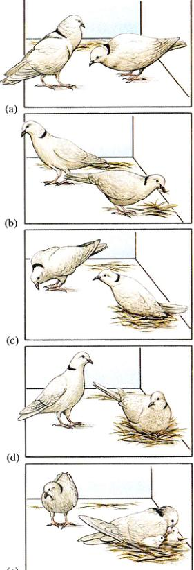
图 26.13 生殖行为的激素调控 鸣鸽的繁殖涉及一系列受激素调控的行为：(a) 求偶和交配；(b) 筑巢；(c) 产卵；(d) 孵化；(e) 在幼鸟孵化后喂给它们嗉囊乳。
雌激素会影响雌性鼠体内的神经递质——血清素 (serotonin)，这可能是某些人类女性的情绪随着月经出现周期性变动的原因之一。
26.2.4 行为节律
许多动物的行为随着时间发生节律性的变化——大雁入秋南迁，鸣禽日出而歌，蝙蝠昼伏夜出；我们人类中的大多数都白天活动夜晚休息。许多行为与月球和潮汐的周期相一致（图 26.14）。为什么动物会有这些周期性发生的行为？又是怎么因素决定了它们的发生时间？对这类问题的研究揭示了动物的节律性行为是以内源节律 (endogenous rhythm) 和外源时钟 (exogenous timer) 为基础的。
行为节律研究多集中在日节律行为上，例如睡眠。以 24h 为周期的节律行为称为日节律行为 (circadian rhythm)，许多这样的行为有着强烈的内源基础，仿佛受到内在生物钟 (biological clock) 的驱动。这种行为为自山运转 (free-running) 的，即使在没有环境信号刺激的情况下也可以形成周期性的循环。例如，几乎所有的果蝇成虫都在凌晨从蛹中孵化，这种蛋白质作为引起生理活动节律的起搏点，影响了其他基因的表达，从而调节果蝇的节律性活动。最后，这种周期蛋白质的积累将抑制其自身基因的表达，完成行为的循环。在老鼠中，clock 基因对于日节律的调节起着重要的作用。
大部分生物钟并非与环境节律完全吻合，因此当个体缺乏外界环境信号刺激时，它的行为节律会逐渐与环境节律脱节。环境信号的刺激可以起到调节生物钟的作用，使得行为与环境节律协调同步。日照是调节日节律的主要环境刺激。
人类最明显的日节律行为是睡眠-活动周期。在某项实验中，被试人员在地下的室内连续居住几个月，这里只有灯光而没有任何其他提示时间的环境信号，所有人按照自己的感觉来安排日程。结果，大部分人都采取了以 25h 为周期的生活模式（睡眠与活动交替）；但是也有少数例外，有些人的睡眠-活动周期甚至达到 50h——每个周期内连续活动 36h！在正常情况下，白昼与黑夜的交替将个体内的生物钟校准到以 24h 为周期。
动物的生物钟是由什么构成的呢？一些昆虫的生物钟位于大脑的视神经叶，通过激素的分泌说明时间控制。哺乳动物（包括人类）的生物钟位于下丘脑的一个特殊区域——交叉上核 (suprachiasmatic nucleus, SCN)。SCN 是一个活性能够发生自发性周期变化的结构，这种自发振荡使得 SCN 成为调节日节律的起搏器；但是，为了使这种节律与外界的光暗周期相吻合，SCN 必须与光照变化联系起来。事实上，视网膜与 SCN 之间存在着直接或者间接的神经联系。
SCN 通过调节松果体 (pineal gland) 分泌的褪黑素
Page 11 / 523
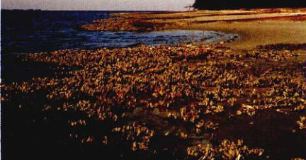
图 26.14 潮汐节律 牡蛎在涨潮时张开贝壳取食，在退潮时又闭上。
(melatonin) 激素，从而对日节律加以控制。在白天，SCN 抑制褪黑素的分泌，结果使得短日照内褪黑素的分泌比长日照时多。于是，褪黑素分泌与季节的变化（日照长度的变化）直接相关，它参与了许多哺乳动物季节性繁殖行为的时间调控。经常乘坐飞机旅行的人有时会得上“时差病”，其中的一个原因就是昼夜周期的变化突然打乱了他们的生物钟，使得褪黑素分泌失调。
许多重要的节律性行为拥有超过 24 小时的周期。年节律行为 (circannual behaviors) 以一年为周期，例如繁殖、冬眠、迁徙等。这些行为很大程度上受着激素水平和其他许多生理因素的调节，而这些生理因素的变化与环境因素（如日照长短）的变化协调一致。目前，人们对年节律的内源生物钟机制知之甚少，这是由于在保持恒定环境的条件下连续进行几年实验十分困难。生物钟的机制仍然是当今生物学研究中一个诱人的未解之谜。
26.3 交流是动物行为的重要元素
许多关于动物行为的研究致力于分析动物间交流信号的本质，研究这些信号如何工作（如何发射和接收），以及确定它们的进化起源和生态学作用。
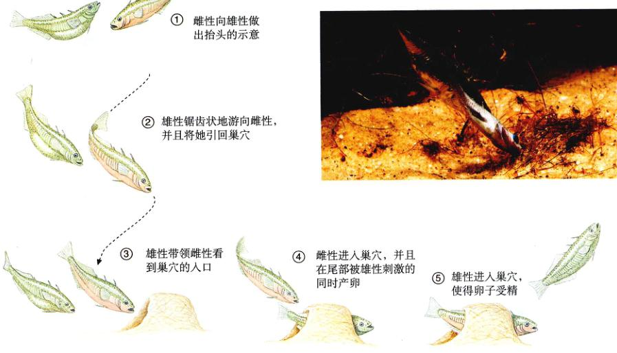
图 26.15 刺激 - 反应链 三棘鱼的求偶涉及一系列导致卵子受精的行为。
① 雌性向雄性做出抬头的示意
② 雄性锯齿状地游向雌性，并且将她引回巢穴
③ 雄性带领雌性看到巢穴的入口
④ 雌性进入巢穴，并且在尾部被雄性刺激的同时产卵
⑤ 雄性进入巢穴，使卵子受精
Page 12 / 524
26.3.1 求偶
在求偶过程中，动物制造信号并以此与异性或同性相互交流。这时经常存在一条刺激 - 反应链 (stimulus-response chain)，即一个体的行为会引起其他个体的连锁行为（图 26.15）。
1) 求偶信号
三棘鱼会保卫它们建立在河床的巢穴，攻击靠近自己领地的雄性同类。Niko Tinbergen 用简单的黏土模型来研究这种行为。他发现模型形状以及该模型是否与鱼相似并不重要；任何一个有着红色腹部的模型（雄性三棘鱼有着红色的腹部）都可以导致攻击行为。Tinbergen 还用一系列黏土模型证明了雄性三棘鱼能够通过雌性三棘鱼膨大的充满卵子的腹部来识别它们。
求偶信号经常具有物种特异性，限制了与其他物种的交流，从而对生殖隔离起着关键作用。萤火虫的闪光就是这种特异性的信号。雄性萤火虫依靠雌性萤火虫的闪光类型（图 26.16）来识别它们，而雌性则依靠闪光反应来识别雄性。这一系列的交互反应为同种配偶提供了明确的身份验证。
求偶有时包含了一系列相关的信号。雄性安乐蜥在求偶时，一边伏在领地上做着“俯卧撑”，一边伸缩颈部色彩鲜艳的垂囊 (dewlap)（图 26.17），这种展示包含了颜色和运动两个因素。雌性对哪种信号有反应呢？用墨水改变皱皮肤颜色的实验表明，对某些种类来说，颜色并不重要；雌性可以被改变颜色的雄性所吸引。
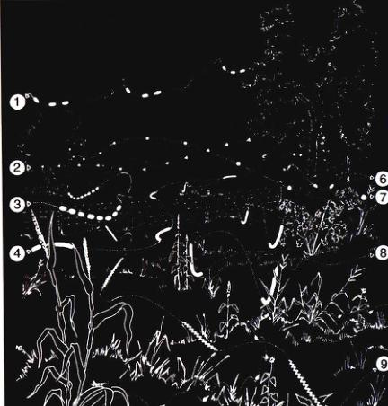
图 26.16 萤火虫产生的“烟花” 这些萤科昆虫发光具有种特异性，也是繁殖隔离的行为机制，每一个数字都代表了一种不同物种雄性的闪光模式。
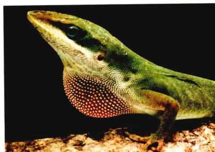
图 26.17 一只雄性蜥蜴的颈部皱皮展示 在激素刺激之下，雄性扩张它们色彩鲜艳的颈部皱皮向雌性求偶。这种行为反过来也刺激激素分泌和雌性的产卵。
2) 信息素和声音信号
化学信号也能引导雄雌交往。信息素 (pheromone)——用于种内个体相互交流的化学信号，在许多动物中起着吸引异性的作用，甚至人类的卵子也能产生一种化学引诱剂向精子传递信号！雌性蚕蛾 (Bombyx mori) 产生的一种性外激素——丝娥素 (bombykol)，是由一个与生殖系统相联系的腺体分泌的。神经生理学研究表明，雄性触角中有大量的特异性感知丝蛾素的受体，这些受体异常灵敏，即使浓度低至每 10¹⁷ 个空气分子中仅有一分子丝蛾素，雄蛾也会产生行为反应！
许多昆虫、两栖动物和鸟类制造特异性的声音信号来吸引配偶。雄性牛蛙利用位于颌下的声囊发声以召唤雌性牛蛙，雄性够够从一大群住在同一生境内同时进入交配期的别种蛙中辨出牛蛙的声音。雄鸟的歌声包含复杂的音符和声调，以向雌鸟展示自身的存在。在许多鸟类中，雌鸟能够通过辨别雄鸟的歌声分出不同的雄鸟，在这些物种中，声音除了具有种特异性外，还存在着个体的特异性。
3) 特异性水平
为什么不同的信号具有不同的特异性水平？特异性水平 (level of specificity) 和信号的功能有关。许多求偶信号具有种特异性以避免交配过程中发生错误——产生不能存活的杂种或者浪费繁殖机会。一只雄鸟的歌声具有个体特异性，这使能够被附近的鸟所识别。当雄鸟们争夺领地的时候，它们会高声歌唱并且对邻居们展开攻击，尽管攻击行为带来伤害风险，且唱歌也很消耗能量。当领地建立起来的时候，邻居入侵的事例很少再发生，这是因为竞争的优胜者已经确定了。每一只雄鸟都熟悉它邻居的歌声，并且知道哪些雄鸟对它不构成威胁，因为它们的势力范围已经相互明确。所以，种群中的鸟都能够识别同类其他鸟的歌声以减少能量消耗。类似地，哺乳动物利用外激素——可能是一系列化学物质的混合物——来说别其他个体，从而确立领地关系。有些信号，例如成群鸟类的鸣叫和聚集不具有种特异性，这些信号使得多种鸟类在面对共同的捕食者时能够相互交流。
Page 13 / 525
26.3.2 社会群体中的交流
许多昆虫、鱼类、鸟类和哺乳动物居住在大的群体中间，它们能够相互交流。例如哨哺乳动物群体的一个个体充当“警卫”，当捕食者靠近时，“警卫”发出警告 (alarm call)，以使其他成员迅速寻找庇护处。社会性昆虫，比如蚂蚁和蜜蜂，能够产生警告激素 (alarm pheromone)，激发攻击行为。在收集食物过程中（图 26.18），蚂蚁还在蚁穴和食物源之间释放踪迹外激素 (trail pheromone)，组织相互的合作。蜜蜂具有非常复杂的舞蹈语言 (dance language)，引导同伴找到蜜源。
1) 蜜蜂的舞蹈语言
欧洲蜜蜂 (Apis memmifera) 的一个蜂窝里住着3万~4万只蜜蜂，它们组成了一个复杂的社会组织。工蜂在几公里以外寻找食物，采集花蜜和花粉，在不同植物中找寻能量回报最高的食物。蜜蜂的食物源一般是零星分布的，每一处能够提供的食物都远远超过了一只蜜蜂的运载能力。当侦察蜂发现食物源后，它们用舞蹈语言通知同伴，这样整群个蜂群就能移找到食物。诺贝尔奖得主 Karl von Frisch 曾经花费多年的时间来研究这种交流方式的细节。
当一只侦察蜂找到蜜源回到蜂窝以后，它将表演一种垂直摆动舞（图 26.19），其形状类似于“8”字。在垂直部分，蜜蜂振动或者扭动腹部，同时发出声音。有时它会周期性地停下来，给同伴品尝一下它采集到的花蜜样品。跳舞时，其他蜜蜂紧紧跟随随着它，不久它们就出现在新的食物源旁边。
von Frisch 和他的同事们认为蜜蜂以舞蹈姿势中包含的信息来确定食物方位。按照他们的解释，侦察蜂用舞蹈的直线部分与蜂窝垂直直方的夹角表示食物、蜂窝和太阳的相对角度，从而指示食物源的方向，而食物源与蜂窝的距离则是用摆动的节奏快慢指示的。
加州大学有一位 Adrian Wenner 的科学家不相信这种舞蹈语言学说，对 von Frisch 的解释提出挑战，他坚持认为花香对于蜜蜂寻找食物是最主要的线索。两个对立的研究者都发表文章支持自己的观点。
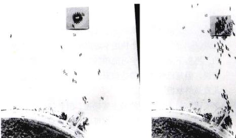
图 26.18 火蚁收集食物行为的化学调控 在火蚁红蜇附近的一个腺体中产生的踪迹外激素，组织协同取食。第一只火蚁取食时所经过的路线 (a) 很快被其他的火蚁所跟随 (b)。
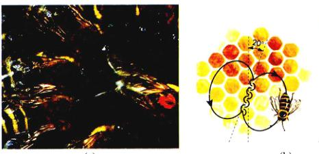
图 26.19 蜜蜂的摆动舞蹈 (a) 一只侦察蜂在蜂房的一个蜂巢上跳舞。(b) 食物源和蜂巢的角度，由跳舞的蜜蜂表现为舞蹈直线部分与垂直部分的夹角。食物在太阳右边 20° 的地方，则蜜蜂在蜂房上舞蹈的直线部分在竖直部分的右边 20°。
Page 14 / 526
“舞蹈语言辩论”在 20 世纪 70 年代中期被 James L. Gould 富有创造力的研究成功地解决了。Gould 设计一个实验，用侦察蜂的舞蹈误导食物寻找者。如果蜜蜂是依靠视觉信号交流的话，Gould 就能够操纵蜜蜂的走向；而如果用的是气味，蜜蜂仍然会找到食物。结果，蜜蜂的走向与 Gould 误导的方向相一致。这就证实了 von Frisch 的理论。
最近，研究者们制造了机器蜜蜂来研究舞蹈语言。它们的舞蹈受电脑操控，忠实完美地再现了真实的蜜蜂舞蹈。这些机器蜜蜂甚至能够停下来给由食物样品！机器蜜蜂的使用使得科学家们能够精确确定引导蜜蜂飞向食物的线索到底是什么。
2) 灵长类语言
一些灵长类具有“词汇”，它们能够对特定的捕食者做出描述。非洲黑长尾猴的声音能够区分秃鹰、猎豹和蛇（图 26.20）。黑猩猩和大猩猩能够通过学习辨认很多符号并且用它们来表示抽象的概念。人类语言的复杂程度似乎很难让我们对此找到生物学上的解释。但是进一步究表明，看似巨大的差异实际上只是表面现象，所有的语言都有着相似的基本结构。人类使用的大约 3000 种语言都使用同样的 40 个辅音（英语用其中的 24 个），任何一个人都可以学会这些辅音。研究者们相信这些相似性体现了我们大脑处理抽象信息的方式，这是由人类基因的特征决定的。
人类出生不久后语言就开始发展。婴儿能够识别所有的 40 种辅音，即使这些辅音在他们的母语中并不存在。与之相反的是，婴儿期没有听过某些辅音的人，在成年后几乎不能识别或者发出这些音。这就是为什么英语使用者很难学会发法语的“r”，而法语使用者将英语中的“th”用“z”代替的原因。婴儿在“儿语”期通过试错学习怎样发声，甚至聋哑儿童学习手语时也存在这个阶段。接着，儿童能够迅速而轻易地掌握几千个词汇。“儿语”期和这个快速学习期似乎都是由基因控制的。再接下来，儿童学习简单的句子，虽然可能有语法错误，但是已经能够传递信息。最后，学习语法规则使儿童最终掌握了语言。
语言是人类交流的最主要渠道，但是气味和其他非语言信号（比如形体语言）也可以交流信息。然而，确定这些交流的相对重要性是很困难的。
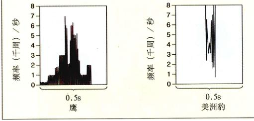
图 26.20 灵长目的语义学 (a) 捕猎者，比如这只美洲豹，袭击并且吃掉非洲黑尾猴。(b) 这种小猴对老鹰、猎豹、蛇发出不同的警报声音，每种区别开来的声音引起一种不同的具有相应适应性的逃脱行为。
26.4 迁徙行为之谜
26.4.1 定向与迁徙
动物迁于巢穴之间喂食幼仔或者有规律地从一处迁徙到另一处。要做到这一点，它们必须能够感知环境的刺激以判定位置。
远离或者趋近一个刺激的活动称为趋性 (taxis)。昆虫被户外灯光所吸引是一个正趋光性的例子，而躲避灯光的昆虫如蟑螂体现了负趋光性。其他刺激也可以用做定向信号，比如螃蟹在小溪里逆流而进。然而，并不是所有的应答反应都与某个特定的方向有关，一些动物只是在刺激加强的时候变得更为活跃，这种反应叫做动态 (kinesis)。
Page 15 / 527
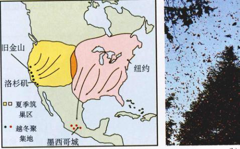
图 26.21 黑脉金斑蝶的迁徙行为 (a) 来自美洲西北部的蝴蝶到太平洋沿岸的一些温度较温和的地区越冬。来自美国东部和加拿大东南部的蝴蝶迁徙到墨西哥，一个超过 3000 公里，历经二到五代才能完成的旅途。(b) 黑脉金斑蝶到达越冬地点处遍远的冷杉林并且 (c) 在树桩上聚集起来。
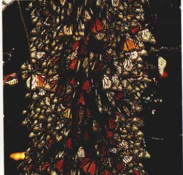
图 26.22 迁徙中的鸟类 (a) 食米鸟夏天活动的范围近来从比较成熟的中西部扩大到较远的地方。它们冬天迁徙到南美洲的时候，在较西部的筑巢的食米鸟并不直接飞向冬天的活动区，而是先飞向中西部，然后采取它们祖先的飞行路线。(b) 金麦鸡则采取一种更长的环状飞行路线。这些鸟从北极的繁殖地飞往南美洲东南部的越冬点，飞行距离大约 13 000 公里。
长距离的往返运动称为迁徙 (migration)。对许多动物来说，迁徙都是以年为周期进行的。野鸭和大雁每年秋天从加拿大沿固定的路线飞到美国，春天又返回加拿大。黑脉金斑蝶每年秋天从北美中东部迁居到墨西哥中部的山地森林（图 26.21），每年八月，蝴蝶向南飞向它们的越冬场所。冬天结束时，蝴蝶开始返回它们夏天的栖息地。奇妙的是，在它们向南飞的过程中会繁殖2~5代，许多以前从未到过那里的新生蝴蝶也能够准确地迁徙到固定的越冬地点。
食米鸟原本生活在美国东部。当一个新的食米鸟种群在美国东部形成时，它们保留了原有的迁徙模式：它们并不是冬天直接飞位了南美洲的栖息地，相反，它们先向东飞到它们祖先居住的地方，然后才向南沿着原来的飞行路线返回（图 26.22）。
动物在迁徙中怎样导航
生物学家对动物的迁徙行为有着浓厚的兴趣，现在我们已经了解了很多有关这些壮举的具体过程。首先我们必须了解，定向 (orientation)（跟随方向的能力）和导航 (navigation)（确定和调整方向然后追随它的能力）之间的区别。前者好比使用指南针，而后老好比使用指南针和地图。通过研究八哥，人们已经证明经验不足的鸟靠定向进行迁徙，而有着迁徙经验的老鸟使用导航（图 26.23）。
鸟类等动物依靠太阳和星星的位置导航。靛蓝鸟在白天飞行时利用太阳定位，天黑以后靠北极星定位。靛蓝鸟还使用夜空的星座，这是它们幼年时期就学会的技术。
Page 16 / 528
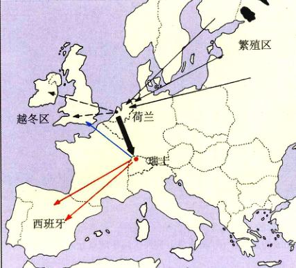
图 26.23 八哥的迁徙行为 没有经验的鸟的导航能力不同于那些经历过迁徙旅程的成年鸟。八哥在荷兰被捕捉到时，那是从从波罗的海沿岸的生长地到不列颠群岛的越冬地的中途地点，这些鸟被运到瑞士然后释放。有经验的鸟可以补偿这个中断而飞到原来的越冬地点（蓝色箭头）。没有经验的鸟继续按照原来的方向飞行，最后到达西班牙（红色箭头）。这些观察结果表明没有经验的鸟按照方向飞行，而有经验的鸟学会了真正的导航。
许多迁徙性鸟类还能够感知地球的磁场并以此确定方向。在鸟笼里它们会尝试沿着正确的地理方向移动，尽管这一点没有明确的线索，然而在鸟笼附近设置强磁场时会改变鸟类移动的方向。在一些鸟的头部找到了铁磁性物质，但是至今尚未识别鸟类磁信号的受体。
鸟类的首次迁徙似乎是依靠星象和地磁场来定向的，这二者提供了相同的方向信息。但是当在实验中使这两神信息发生冲突的时候，鸟类则按照星星的方向来定位，即星象消息掩盖了磁场信息。然而最近的研究表明，北半球的鸟类根据星星的位置向南迁移，而地磁场告诉它们迁移的具体路径。总而言之，这些新数据表明星象和地磁场对鸟类导航系统的完善与发展共同发挥作用。
相对来说，对其他动物的迁徙行为我们知之甚少。比如绿海龟从巴西跨越人西洋迁徙到 Asension 岛，雌海龟在那里产卵。它们怎么能在30年没有到过那个小岛的情况下找到它？在岛上孵出的幼海龟又是怎么能找到回巴西的路呢？最近的研究表明海浪的运动是一个重要线索。
26.5 众说纷纭的动物“认知”水平
26.5.1 动物的认知
我们每个人都可以绘声绘色地讲述一只宠物猫的传奇行为，这似乎表明动物能够进行推理或者思考。然而几十年以来，研究动物行为的学生往往拒绝承认除人以外的动物也会思考。实际上，行为学家 Lloyd Morgan 认为如果一个行为有其他的动因，那么就不能够认为是思考的表现。流行的观点认为动物的行为只是对环境做出的某种反应而已。
最近几年里，人们对动物意识投入了很多关注。核心问题是动物是否表现出认知行为 (cognitive behavior)，即它们是否能够加工所获得的消息，它们的应答行为是否反映了它们的意思（图 26.24）？哪种行为能够体现出动物的认知力？城里的海鸥懂得把尚未回收的牛奶瓶的锡盖以得到下面粘着的牛奶，而且我们已经知道这种“知识”已经在多种鸟类中传授；日本短尾猴能够学会洗土豆，并从沙子中挑出谷粒，黑猩猩能够折下树枝伸人蚁穴掏出白蚁。正如我们以前所讨论的，黑长尾猴能够识别特殊的食肉动物。
只有少数实验检测了动物的思考能力，其中有一些表明动物会撒谎。目前研究者们正在试图确定灵长类是否会通过欺骗来操纵其他成员的行为。许多脊椎动物的例子似乎说明动物也会欺骗，比如灵长类的狒狒和黑猩猩，但是设计实验来证明这一点仍然十分困难。对动物认知能力的研究尚处于起步阶段，尽管如此，它一定会引起更多的关注。无论是哪一种情况，固执地否定动物存在意识是不明智的。
许多实验表明，动物能够解决问题——事实很难用非心理因素来解释。比如，在1920年所做的一系列经典实验中，一只黑猩猩被关在屋顶高悬着香蕉的屋子里，屋子的地面上还散放着几只箱子。在几次跳起来抓香蕉的尝试失败之后，黑猩猩忽然发现了箱子并且立刻堆积它们，然后爬上箱子，并取得香蕉（图 26.25）。
也许，像黑猩猩这样与人类有近亲关系的物种中，发现智慧的痕迹并不那么令人惊奇。但是最近有研究发现，其他动物也有类似的认知能力。大乌鸦一直被认为是最聪明的鸟。佛蒙特州立大学的 Bernd Heinrich 最近做了一个实验，用一户户外的大型乌鸦饲养大乌鸦。
Page 17 / 529
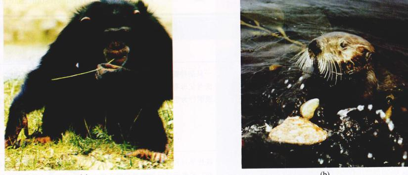
图 26.24 动物会思考吗 (a) 这只黑猩猩从树枝上剥除树叶，以便用树枝去掏白蚁的蚁穴。这种行为有力地表明这只黑猩猩在行为之前是有意识的计划的，它明白自己将要做什么。(b) 这只海獭将一块礁石用作“砧板”，在上面摔打蛤以打开蛤的外壳。一个海獭通常会持续很长一段时间用同一块礁石，似乎它很清楚想要用这块礁石作什么。这些行为表明动物具有认知能力。
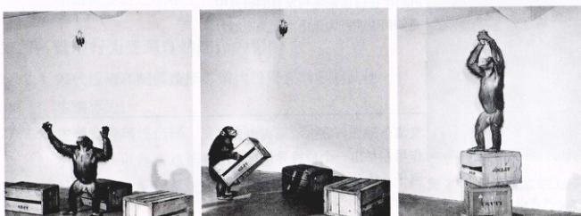
图 26.25 黑猩猩所解决的问题 不能用跳跃跌来得到悬挂的香蕉的时候，黑猩猩设计出了一个方案。
Heinrich 把一块肉拴到一根绳子的末端，把绳子钓在鸟舍的横杆上。大乌鸦喜欢吃肉，但是以前从未见过绳子，它无法得到肉，在几个小时里，它们反复不停地盯着肉，但是没有任何行动。忽然，一只乌鸦飞向横杆，用嘴衔住绳子拉上来踩到爪子底下，然后它又衔住一段绳子，将这个动作重复了若干次，每次都使肉离它更近一些（图 26.26）。最后，乌鸦终于抓住了肉。这只乌鸦面临着一个前所未有的新问题，它能够设计出解决问题的方案。后来，另外5只乌鸦中的3只也想办法得到了肉。Heinrich 又做了其他类似的实验，有力地证明了大乌鸦具有高度的认知能力。
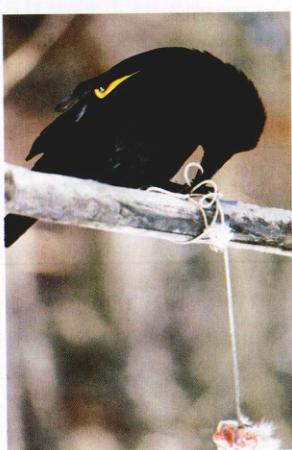
图 26.26 大乌鸦所解决的问题 当遇到从从未遇到过的问题的时候，这只大乌鸦想出了得到绳子末端悬挂的肉块的方法：反复地拉上来一部分绳子并且踩住已经拉上来了的绳子。
Page 18 / 530
小 结
26.1 动物行为学者重研究行为的自然历史
- 行为是对环境作出的适应性反应。动物的感觉系统检测并处理这些刺激信息。
- 一只杂种鹦鹉搬运筑巢材料的方法与父母有何不同？这个对比表明行为是内在的还是学来的？
26.2 比较心理学重点研究学习对行为的影响
- 行为既是内在的（受基因控制），也是通过学习得来的。基因限制了行为的变化程度和联系的类型。
- 最简单的学习形式包括适应和感知。更复杂的学习，如经典条件反射和操纵性条件反射，能够将两个刺激之间或一个刺激和一个反应间联系起来。
- 动物的内在状态影响着行为发生的时间和方式。激素可以改变动物的行为和对刺激的感知力。
26.3 交流是动物行为的重要元素
- 动物通过制造视觉、听觉和化学信号进行交流。这些信号与交配、觅食、防御和其他社会情况有关。
26.4 迁徙行为之谜
- 动物在日常生活和长距离迁徙中利用太阳位置和星象导航。
26.5 众说纷纭的动物“认知”水平
- 许多传奇性的事例说明动物存在意识，但是研究仍然处于起步阶段。
问 题
- 一只杂种鹦鹉搬运筑巢材料的方法与父母有何不同？这个对比表明行为是内在的还是学来的？
- 联想学习和非联想学习有什么区别？经典条件反射和操作性条件反射有什么区别？
- 亲子印记和性別印记的作用分别是什么？为什么一些小动物会对移动的箱子作出印记反应？
- Marler 在白顶雀鸣叫发育的研究中是如何说明行为是由本能决定的？
- 交流信号如何在生殖隔离中发挥作用？举出一个种特异性信号的例子。为什么一些信号是个体特异的？
- 向性的定义是什么？动向是什么意思？候鸟在迁徙中用什么来定向？
- 什么证据能够使你相信动物是有意识的？
媒体资源
- 学生研究：野鼠的行为
- “科学”专栏：鹰的一夫多妻制
- “科学”专栏：重复与学习
- “科学”专栏：狗儿会思考吗